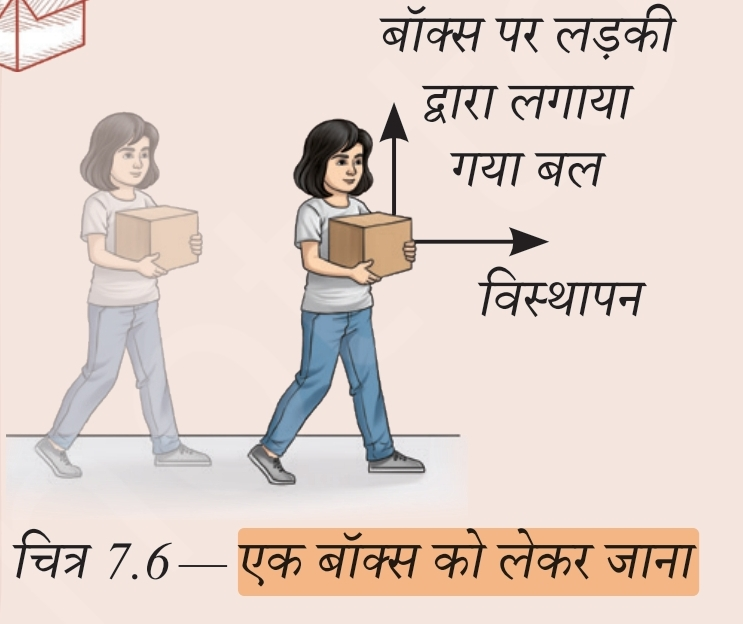
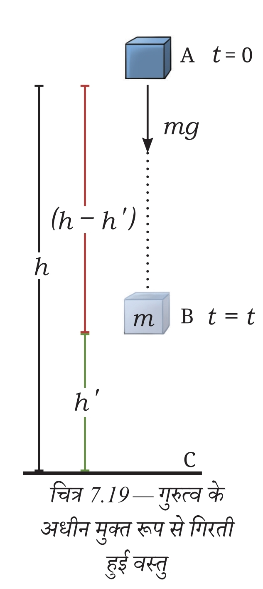
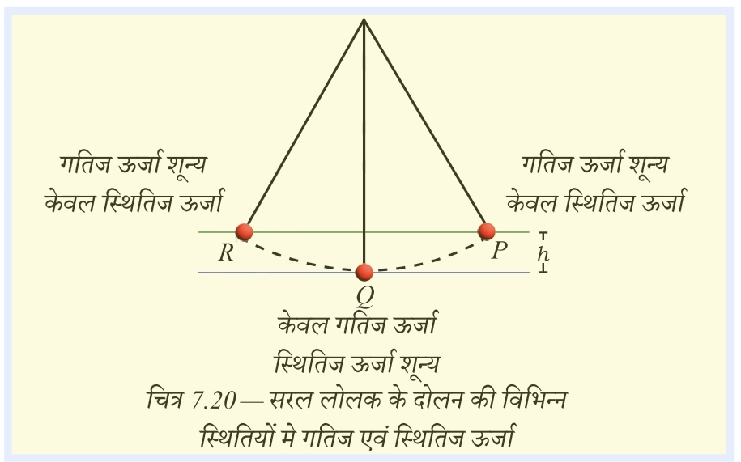
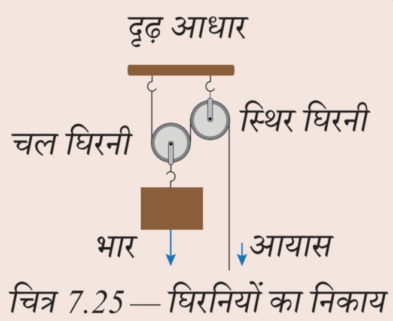
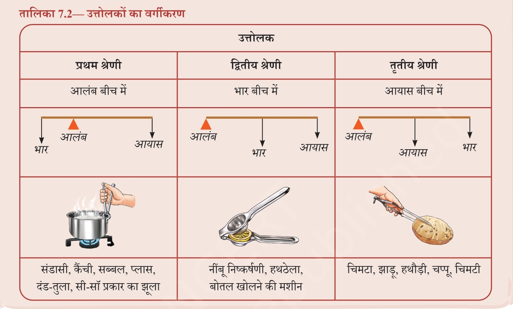

NCERT आधारित सम्पूर्ण हिन्दी नोट्स • Railway Exam Revision
यदि बल नियत नहीं है तब भी किया गया कार्य बल-विस्थापन ग्राफ में प्रारंभिक और अंतिम स्थिति के बीच घिरे क्षेत्रफल (Area) द्वारा ज्ञात किया जा सकता है।

कार्य धनात्मक या ऋणात्मक होना बल तथा विस्थापन की सापेक्ष दिशाओं पर निर्भर करता है।
बल की दिशा में विस्थापन होने पर कार्य धनात्मक होता है।
उदाहरण: लड़के द्वारा पहियेदार कुर्सी पर किया गया कार्य।
बल की दिशा विस्थापन की दिशा के विपरीत होने पर कार्य ऋणात्मक होता है।
उदाहरण: गोलकीपर द्वारा गेंद रोकने पर किया गया कार्य।
किसी वस्तु पर धनात्मक कार्य करते हैं तो उसमें ऊर्जा प्राप्त होती है।
वह ऊर्जा जो वस्तु में उसकी गति अथवा स्थिति के कारण होती है, यांत्रिक ऊर्जा कहलाती है।
गति के कारण निहित ऊर्जा को गतिज ऊर्जा कहते हैं।
किसी वस्तु में विकृति के कारण अथवा वस्तुओं के एक निकाय में उनकी सापेक्ष स्थितियों के कारण जो ऊर्जा संचित होती है, उसे स्थितिज ऊर्जा कहते हैं।
पृथ्वी और गेंद का निकाय गुरुत्वीय स्थितिज ऊर्जा का उदाहरण है।
गुरुत्वीय बल क्षेत्र में स्वतंत्रतापूर्वक गिरती हुई किसी वस्तु के लिए विभिन्न बिंदुओं पर स्थितिज एवं गतिज ऊर्जा में परिवर्तन होता रहता है, लेकिन कुल यांत्रिक ऊर्जा संरक्षित रहती है।


कार्य करने की दर को शक्ति कहते हैं।
सरल मशीनें कार्य को सरल बनाने में सहायता करती हैं।
घिरनी एक पहियेदार चक्र (Grooved wheel) है जिसमें धागा या रस्सी का सहारा दिया जाता है।

आप वस्तु को आनत तल पर रखकर ऊपर उठा सकते हैं।
यह एक ऐसी मशीन है जो भारी वस्तु को ऊपर चढ़ाने या उतारने में सहायता करती है।
उत्तोलक किसी कार्य को करने में बल को कम करता है।

एक स्थिर बिंदु जिसके परितः उत्तोलक घूमता है।
वह बल जिसके विरुद्ध उत्तोलक कार्य करता है।
भार उठाने में लगाया गया बल।
| श्रेणी | बीच में क्या होता है? | उदाहरण |
|---|---|---|
| प्रथम श्रेणी | आलंब बीच में | सँडासी, कैंची, सब्बल, प्लास, दंड-तुला, सी-सॉ |
| द्वितीय श्रेणी | भार बीच में | नींबू निचोड़ने की मशीन, एक पहिया ठेला, बोतल खोलने की मशीन |
| तृतीय श्रेणी | आयाम बीच में | चिमटा, हथौड़ा, झाड़ू, चिमटी, चम्पू |
जूल (J)
जूल (J)
वाट (W)
746 W
बल की दिशा में विस्थापन
विस्थापन के विपरीत बल
बल शून्य / विस्थापन शून्य / बल और विस्थापन लंबवत
आलंब बीच में
भार बीच में
आयाम बीच में
झुकाव कम → आवश्यक बल कम
स्थितिज ऊर्जा + गतिज ऊर्जा = कुल यांत्रिक ऊर्जा